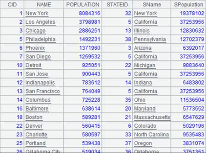

Description:
Reset a cursor by moving it back to the beginning.
Syntax:
cs.reset()
Note:
The function resets a cursor by moving it back to the beginning when it traverses cursor data to the end.
Parameters:
|
cs |
A cursor |
Return value:
The cursor itself
Example:
|
|
A |
|
|
1 |
=demo.cursor("select * from scores") |
Return retrieved data as a cursor |
|
2 |
=A1.fetch() |
Fetch data from the cursor  |
|
3 |
=A1.fetch() |
Return null because A1’s cursor has come to the end of the data |
|
4 |
=A1.reset() |
Move the cursor back to the beginning |
|
5 |
=A1.fetch() |
Fetch data out of the cursor; returned result is the same as A2 |
Related functions: